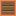

Ветрогенератор
alaindustrial:wind_mill
Сводка
Ветрогенератор — простой генератор начального уровня (LV): вырабатывает энергию (EU/FE) из ветра, без топлива. Для работы нужны три вещи: Деревянный ротор в слоте (без него генерации нет), открытое небо над блоком и свободное место вокруг лопастей (перед блоком, по бокам и ямка снизу — иначе лопасти упрутся в соседние блоки). Чем выше построен и чем хуже погода (дождь, гроза) — тем больше энергии. Со временем ветряк можно улучшить: вставьте эволюционный чип (тот же, что у солнечных панелей) — и он превратится в Небесный (сильнее на высоте) или Буревой (сильнее в непогоду). Ветряк вознаграждает тех, кто строит высоко и не боится гроз.
Как запустить (шпаргалка)
- Скрафтите Ветрогенератор и Деревянный ротор (рецепты — внизу страницы).
- Постройте башню повыше: ниже уровня моря (y = 63) ветряк не работает вовсе, максимум — на y ≈ 128.
- Поставьте блок и откройте его (ПКМ), вставьте ротор в центральный слот.
- Проверьте, что над блоком открытое небо, а вокруг лопастей (блок перед ветряком, по одному
слева/справа от него и три снизу) — только воздух.
- Подключите кабель к задней стенке — остальные стороны энергию не отдают.
Для ориентира: один ветряк на y ≈ 128 в ясную погоду даёт 4 EU/FE/т, в грозу — 8 EU/FE/т. У ветряка есть внутренний запас на 4000 EU/FE — если энергию не забирать кабелем, генерация останавливается до освобождения места.
Ветряк не работает? Проверьте по порядку: есть ли ротор в слоте → нет ли крыши над блоком → не мешает ли блок перед лопастями → не стоит ли соседний ветряк слишком близко → не штиль ли (у земли в ясную погоду выработка 0 — стройте выше).
Энергия
Ветряк только производит энергию и не принимает чужую. Внутри буфер на 4000 EU/FE, отдаётся в сеть тира LV.
| Поле | Значение |
|---|---|
| Роль | производитель с буфером |
| Буфер (EU/FE) | 4000 |
| Макс. вход | — (не принимает энергию) |
| Макс. выход (EU/FE/такт) | 32 (LV) |
| EU/FE/такт | 0–8 (база 0–4 по высоте × погодный множитель, кап 8) |
Энергия выдаётся только с задней грани — кабель подключайте к задней стенке ветряка, остальные стороны энергию не отдают.
Генерация
Чем выше ветряк над уровнем моря и чем сильнее непогода — тем больше энергии. База растёт с высотой: +1 EU/FE/такт за каждые 16 блоков над морем, до 4 EU/FE/такт примерно на высоте y ≈ 128. Погода умножает базу: ясно ×1, дождь ×1.5, гроза ×2, общий потолок — 8 EU/FE/такт. У земли или под крышей ветряк бесполезен.
| Поле | Значение |
|---|---|
| Источник | ветер: высота над уровнем моря + открытое небо + погода |
| Условие работы | ротор установлен И открытое небо над блоком И лопасная зона свободна И буфер не полон |
| Измерения | только обычный мир (minecraft:overworld) |
| EU/FE/такт (база) | min((y − уровень моря) / 16, windMillMaxBaseEuPerTick) = 0–4 |
| Модификаторы | погода: ясно ×1, дождь windMillRainFactor (1.5), гроза windMillThunderFactor (2.0); итог ограничен windMillMaxEuPerTick (8) |
Если что-то не так, ветряк покажет это в интерфейсе понятной строкой: «нет ротора», «под крышей», «помеха», «помехи ротора» или «штиль». Когда он реально генерирует — горит индикатор-шестерёнка.
Зазор для лопастей
Простое правило: лопасти крутятся в блоке перед ветряком и занимают квадрат 2×2. Оставьте свободными сам блок перед ветряком, по одному блоку слева и справа от него и три блока под ним (ямку) — иначе ветряк покажет режим «Помеха» и остановится. «Свободно» — это воздух, трава, цветы, ростки или слой снега (то, во что можно поставить блок). Всё, у чего есть реальная прочность — камень, стекло, листва, заборы, плиты или столб самого ветряка — мешает. Крышу сверху отдельно ловит проверка открытого неба, так что над лопастями воздух проверять не нужно. Эта логика общая для всех трёх ветряков (T1, небесный, буревой).
Интерференция роторов
Простые правила расстановки нескольких ветряков: Смотрят в одну сторону и стоят рядом — оставьте 1 блок воздуха между ними; вплотную их лопасти заденут друг друга, и остановятся оба. Спина к спине — можно вплотную. Лицом к лицу — нужно минимум 2 блока между ними. Важно: остановятся именно оба ветряка без исключений, и их лопасти исчезнут из рендера (чтобы не мерцать друг сквозь друга). Сосед без ротора помех не создаёт — но стоит вставить в него ротор, и работающий рядом ветряк тоже остановится. Неподвижный ротор соседа считается так же, как вращающийся. Эта логика тоже общая для всех трёх ветряков. Приоритет причин остановки: нет ротора → крыша → помеха → интерференция → погода. Помеха важнее погоды: даже в полную грозу блок перед лопастями (или чужой ротор в диске) остановит генерацию — и эволюция чипа тоже не идёт, пока лопасти не вращаются. Высота, небо и погода пересчитываются не каждый тик, а примерно раз в две секунды; между пересчётами ветряк отдаёт ту же ставку.
Инвентарь
| Слот | Принимает | Кол-во |
|---|---|---|
| rotor | Деревянный ротор (windmill_rotor) — обязателен для генерации | 1 |
| chip | эволюционный чип (солнечный/лунный) — запускает эволюцию | 1 |
Интерфейс
Экран показывает полосу энергии (с точным числом EU/FE во всплывающей подсказке), текущую выработку, режим работы, слот ротора по центру, слот чипа справа, прогресс эволюции снизу и индикатор статуса сверху. Дорожка эволюции загорается с первого же активного тика — как у солнечной панели. Тип: container Показывает: полосу энергии (тултип с точными EU/FE при наведении), текущую выработку, режим работы, слот ротора (центр), слот чипа (справа), прогресс эволюции (снизу), индикатор статуса (сверху). Реализация: WindMillScreen + WindMillMenu, texture-backed assets/alaindustrial/textures/gui/container/wind_mill.png. Дорожка эволюции показывает минимум 1px с первого активного тика — как у солнечной панели.
Свойства блока
| Поле | Значение |
|---|---|
| Форма | полный куб 16³ (окклюдер) |
| Установка | лицевой гранью к игроку (FACING) |
| Прочность | 3.0 |
| Взрывоустойчивость | 6.0 |
| Инструмент | кирка |
| Дроп с NBT энергии | да — при поломке блок сохраняет накопленную энергию |
Рецепты
Крафт: data/alaindustrial/recipe/wind_mill.json — 4× медный слиток (углы), 2× доски (#minecraft:planks, верх/низ), 2× alaindustrial:copper_cable (бока), alaindustrial:wooden_gear (центр). Ротор (обязателен для работы): data/alaindustrial/recipe/windmill_rotor.json — 4× доски (углы), 2× железный слиток (верх/низ), 2× alaindustrial:copper_cable (бока), alaindustrial:wooden_gear (центр). Рецепты переработки: нет (генератор).
Прогрессия
Базовый ветряк — нейтральная форма первого тира. Вставьте эволюционный чип (тот же, что у солнечных панелей) и дайте ему поработать под открытым небом с установленным ротором — он превратится в одну из веток, сохранив накопленную энергию: Солнечный эволюционный чип → Небесная ветка: буст с высотой. Лунный эволюционный чип → Буревая ветка: буст в непогоду.
| Тир | Солнечный чип (высота) | Лунный чип (шторм) |
|---|---|---|
| T1 | Ветряк (нейтральный) | Ветряк (нейтральный) |
| T2 | Небесный ветряк | Буревой ветряк |
Порог: 33 600 активных тиков (ротор установлен, чип вставлен, открытое небо). При непрерывной ясной погоде это около 28 реальных минут (примерно 3 игровых дня).
Баланс
База по высоте: +1 EU/FE/t за каждые 16 блоков над уровнем моря, кап windMillMaxBaseEuPerTick = 4 (достижимо примерно на y ≈ 128). Погода умножает базу до windMillMaxEuPerTick = 8 в грозу. У земли и в ясную погоду ветряк слаб (0–1 EU/FE/t) — он вознаграждает высокие башни и штормы. Пик 8 EU/FE/t кратковременно обгоняет геотермалку (16 EU/FE/t идут постоянно — ветряк только в грозу и недолго), дополняя, а не заменяя топливные источники.
| Config-ключ | Значение | Применяется |
|---|---|---|
windMillMaxBaseEuPerTick | 4 | кап базы по высоте |
windMillMaxEuPerTick | 8 | финальный кап EU/FE/t |
windMillRainFactor | 1.5 | множитель дождя |
windMillThunderFactor | 2.0 | множитель грозы |
windMillSampleTicks | 40 | частота пересчёта |
windMillBuffer | 4000 | ёмкость буфера |
windMillEvolveTicks | 33 600 | порог эволюции (~28 реальных минут) |
Связанное
Небесный ветряк — T2 небесная ветка эволюции. Буревой ветряк — T2 буревая ветка эволюции. Солнечная панель — делит эволюционные чипы с ветряком.
Крафт
Крафт на верстаке
copper
planks
copper
copper
planks
copper

Ветрогенератор